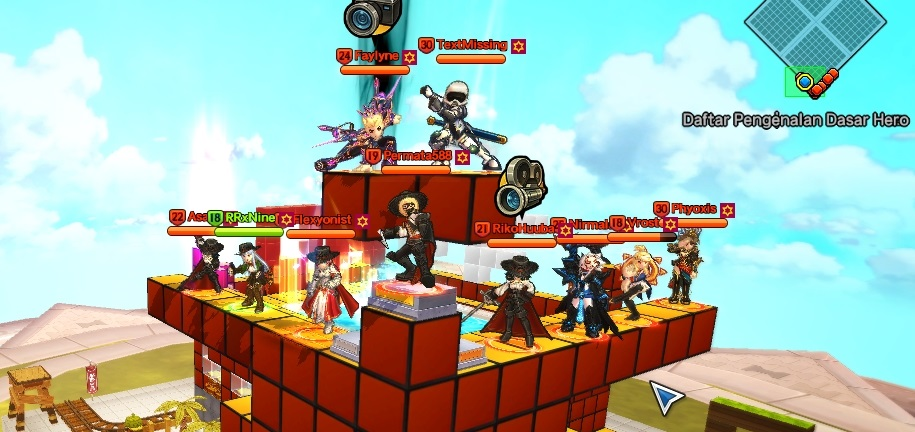

Sejarah DAFF
DAFF Guild adalah guild lost saga indonesia yang sangat terkenal dikarenakan telah menjuarai Turnamen LSNC pada tahun 2013, karena kepopuleran nama guildnya para membernya pun cukup disegankan ketika tiba-tiba join battle karena cara mainnya yang membuat para player lainnya cukup terkejut karena sangat lincahnya para member DAFF Guild bermain.
Namun setelah lost saga indonesia tutup kini game lost saga remastered (LSR) pun rilis, para player lama pun akhirnya memilih untuk mentransfer akun dan bermain LSR, akan tetapi para member DAFF Guild pun tak mau kalah mereka berusaha terus belajar hal baru walau harus belajar dari kegagalan dengan animasi baru dari para banyak nya hero evolution yang perlahan rilis.